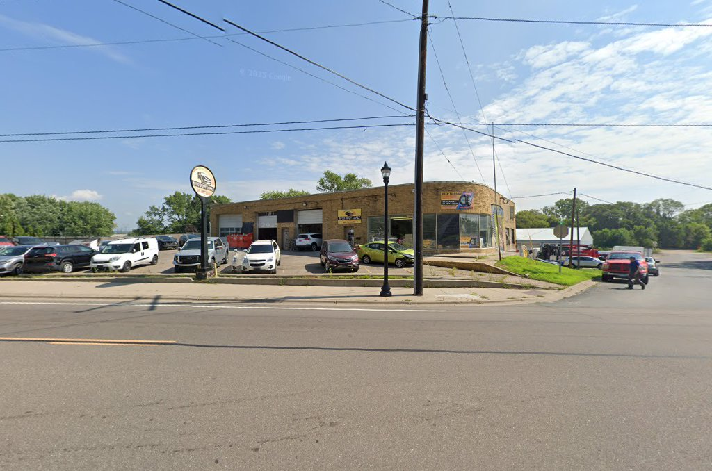

Dent Repair in South St Paul, MN
Auto Body Lopez repairs dents, dings, scratches, and rust spots for drivers across South St Paul and the south metro — refinished so the panel looks smooth and solid again, not just filled.
Dent Repair in South St Paul, Done Right
If you need dent repair in South St Paul MN, you've probably got one of two problems: a shopping-cart ding you want gone, or a bigger dent from a low-speed bump that also chipped the paint. We handle both the same careful way — assess the damage, work the metal back into shape, and refinish so the repair blends into the panel around it. One customer brought us a dented side panel by the gas door with a hard-to-match metallic pearl finish, and when they picked up the car, they couldn't tell anything had happened — that's the bar we hold every dent job to.
What Our Dent & Scratch Repair Covers
Not every dent needs the same fix, so we look at what the panel actually needs:
- Dent and ding repair — working the metal back to its original shape on doors, fenders, and panels.
- Scratch and scrape repair — filling and refinishing scratches that go through the paint.
- Rust spot repair — cutting out corrosion and refinishing the area so it doesn't spread.
- Paint touch-up and blending — matching the repaired spot to the surrounding factory paint.
- Pinpoint scratch touch-up — small nicks near a repair addressed along with the main job, not left behind.
Whether it's one ding or several, the goal is a panel that looks like nothing ever happened to it.
Signs You Need Dent or Scratch Repair
Most of the time this one's obvious, but here's what's worth bringing in:
- A dent or ding from a parking lot, shopping cart, or low-speed bump.
- A scratch that goes through the clear coat into the paint or primer.
- A small rust bubble or spot starting to show through the paint.
- A crease or dent that's affecting how a door or panel lines up.
- Hail damage across a hood, roof, or trunk.
Rust in particular is worth catching early — it spreads under the paint faster than it looks like it should, especially through a Minnesota winter.
What to Expect
Bring the vehicle in and we'll take a look at the dent, ding, or scratch and tell you honestly what it needs — sometimes that's a straightforward repair and repaint, and sometimes a rust spot means cutting out more than what's visible on the surface. We give you a fair, reasonable price up front. A single dent with paint has been turned around in as little as 48 hours for a past customer; more involved rust or multi-spot repairs take a bit longer, and we'll tell you what to expect before we start.
Why Dent & Rust Repair Matters More in a Minnesota Winter
Road salt is the real reason South St Paul drivers can't just ignore a small dent or scratch. Salt sits on a car through the winter, and any spot where paint is broken — even a small chip — is where rust gets its start underneath the surface where you can't see it. What looks like a cosmetic ding in November can be a rust hole by the following winter if it's never addressed. Freeze-thaw cycles and potholes add dents of their own, too. Getting a dent or scratch properly repaired, not just touched up, is one of the better ways to keep a South St Paul vehicle's body solid for the long haul.

Areas We Serve
We're based at 1449 Concord St S in South St Paul (South Saint Paul), Minnesota, and handle dent, scratch, and rust repair for drivers throughout South St Paul, West St Paul, Inver Grove Heights, and Dakota County, as well as the broader south metro.
Why Drivers Choose Auto Body Lopez for Dent Repair
You get honest, careful work at a fair, reasonable price — not a quick fix that leaves a mismatch you can spot later. One customer's van had rust repaired at a reasonable price and came back looking brand new; another had a dent and pinpoint scratches near the gas door fixed and repainted in a hard-to-match metallic pearl color, done so well nobody could tell it had ever been damaged. That kind of attention to a "small" repair is why South St Paul drivers keep bringing their cars back to us.
Dent Repair FAQ
It depends on the size of the dent and whether paint or rust work is involved, so we give you a fair, reasonable price after seeing the vehicle. Call or text (651) 756-8621 for a quote.
In many cases, yes — we can touch up and blend a scratch into the surrounding paint without a full panel repaint, depending on how deep the scratch goes and the finish involved. We'll tell you what your specific repair needs.
Yes — we address rust as part of dent and scratch repair, cutting out corrosion and refinishing the area so it doesn't keep spreading under the paint.
A single dent with paint has taken as little as 48 hours for a past customer. More involved repairs, like rust or multiple spots, take longer — we'll give you a realistic timeline once we've seen the damage.